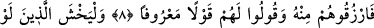

MÎRASTA YETİMİN PAYI
7- Ana-babanın ve yakınların bıraktıklarından erkeklere bir pay vardır; ana-
babanın ve yakınların bıraktıklarından kadınlara da bir pay vardır. Gerek azından,
gerek çoğundan belli bir hisse ayrılmıştır.
8- (Mîrastan payı olmayan) yakınlar, yetimler ve yoksullar mîras taksîminde
hazır bulunursa bundan, onları da rızıklandırın ve onlara güzel söz söyleyin.
9- Geriye eli ermez, gücü yetmez çocuklar bıraktıkları takdirde (halleri ne olur)
diye korkacak olanlar (yetimlere haksızlık etmekten) korkup titresinler; Allah’tan
sakınsınlar ve doğru söz söylesinler.
10- Haksızlıkla yetimlerin mallarını yiyenler şüphesiz karınlarına ancak ateş
tıkınmış olurlar; zaten onlar alevlenmiş ateşe gireceklerdir.
Rivâyet edilir ki ensârdan Evs b. Sâmit (r.a.), geride eşi Ümmü Kühha (r.anhâ) ve üç
kız çocuğu bırakarak vefât etti. Amcasının oğulları Süveyd ile Urfuta da hemen
câhiliyye âdetlerine göre hareket ederek Evs’in bütün mîrâsına el koydular.
Çünkü câhiliyye Arapları; “Ancak savaşanlar ve yurdunu müdâfaa edenler mîras alır”
diyerek kadınlarla çocukları mîrastan mahrum bırakırlardı. Bunun üzerine Ümmü
Kühha, Medîne’de Fadîh Mescidi’nde bulunan Rasûlullah (s.a.)’e gelerek şikayetçi
olmuştu. Hz. Peygamber de kendisine: “Şimdi evine dön, bakalım Allah ne
buyuracak?” dedi. Bunun üzerine işte bu âyet nâzil oldu.
Peygamberimiz (s.a.) “Allah, hanım ve kızlarına da mîrastan pay verdiğinden Evs’in
malından hiç bir şey dağıtmamaları” için o iki adama haber gönderdi. Fakat 11 ve 12.
âyetler nâzil olup kadınların payları beyân edilinceye kadar paylarını taksim etmedi. Bu
âyetler de nâzil olunca Ümmü Kühha’ya terekenin 1/8’ini, kız çocuklarına 2/3’ünü;
Evs’in amca oğullarına da geri kalanını verdi.[205]
Mîrastan mahrum bırakılanlar dışında, ölene birinci dereceden mîrasçı olabilen ana-